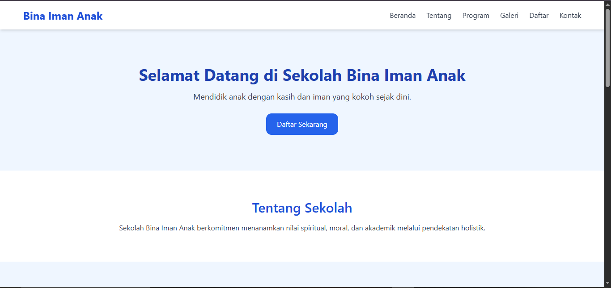

Web Developer | UI/UX Designer | Freelancer | Network Engineer | Android Developer
Saya adalah lulusan SMK Telkom Jakarta yang memiliki minat kuat dalam bidang jaringan komputer dan teknologi informasi. Saat ini saya sedang menempuh pendidikan S1 Teknik Informatika di Universitas Pamulang dan aktif mengembangkan keterampilan teknis seperti konfigurasi jaringan menggunakan Cisco Packet Tracer, dan troubleshooting jaringan menggunakan Cisco, GNS3, dan Winbox, serta pernah membangun topologi jaringan lengkap satu gedung dengan routing RIP, OSPF, dan EIGRP. serta mempelajari dasar-dasar pemrograman. Saya memiliki pengalaman langsung di lapangan sebagai Teknisi PSB di PT Telkom Indonesia serta telah dinyatakan kompeten oleh BNSP dalam bidang Junior Network Administrator. Saya dikenal sebagai pribadi yang cepat belajar, mampu bekerja dalam tim, dan siap berkembang sebagai Network Engineer di industri teknologi.
HTML
CSS
JavaScript
Mobile Programming (Java, Kotlin, Android Studio)
UI/UX Design (Figma, Adobe XD, Prototyping)
Network Engineering (Cisco, Mikrotik, Subnetting)
Website informasi sekolah dengan fitur login dan manajemen data siswa.
 🌐 Lihat ProyekAplikasi Android berbasis Java menggunakan ML Kit dan RecyclerView. Fitur: deteksi objek, OCR, dan pencarian Google otomatis.
🔗 Lihat di GitHub | ⬇️ Unduh APKAplikasi edukasi Interaktif Untuk difabel dengan fitur Pilih Materi: Pengguna bisa memilih mata pelajaran: Matematika Bahasa Indonesia Fisika, Soal Akan Tampil di Sini: Area untuk menampilkan soal sesuai materi yang dipilih, Rekam Suara (🎤 Rekam Suara): Fitur ini memungkinkan pengguna menjawab soal dengan suara. Diduga menggunakan Speech Recognition untuk mendeteksi jawaban. Skor dan Grafik Skor: Menampilkan nilai (skor) pengguna. Grafik menampilkan perkembangan skor. Reset Skor: Mengatur ulang skor ke 0. Histori Skor: Melihat riwayat skor sebelumnya. Ganti Mode Siang/Malam: Mengubah tampilan UI antara mode terang dan gelap.
🔗 Lihat di GitHubAplikasi Android berbasis Java yang terintegrasi dengan Gemini AI (Google Generative AI). Pengguna dapat mengetik pertanyaan dan menerima jawaban langsung dari AI.
Aplikasi Android untuk mencatat dan memantau pengeluaran pribadi harian, mingguan, dan bulanan. Dibuat menggunakan Java dan SQLite.
Desain prototipe Aplikasi Asisten Produktivitas Adaptif untuk Membantu pengguna mengatur tugas harian dan aktivitas berdasarkan waktu dan suasana hati (pagi/sore/malam), Memberikan rekomendasi cerdas dan pengingat personal, Menyesuaikan konten dan saran berdasarkan kebiasaan pengguna (adaptif).
🎨 Lihat di FigmaSimulasi dan implementasi jaringan menggunakan Cisco Packet Tracer dan Mikrotik RouterOS. Termasuk konfigurasi IP, routing OSPF, VLAN, NAT, dan pengujian koneksi.
🔗 Lihat Dokumentasi di GitHub | 📄 Lihat Laporan PDF"Sangat profesional dan hasil kerjanya bagus!"
"Pengerjaannya cepat dan komunikatif."
gentagentaramadhan@gmail.com
+62 895-3225-89140 / +62 812-8953-6006
Jakarta Barat, Indonesia